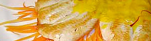

Rotzungenfilets
5 von 6filet in butter beidseitig anbraten. pfeffern. aus der pfanne nehmen und im ofen bei 80c weitergaren lassen.
die pfanne gleich weiterbenutzen (nicht waschen) und bei bedarf nochmals butter beigeben. rahm und ca eine halbe zitrone hinzufügen. würzen. die sauce über den fisch.
